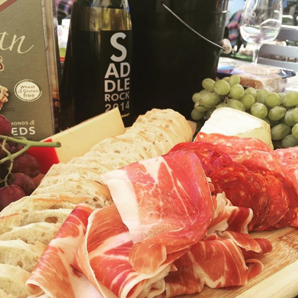
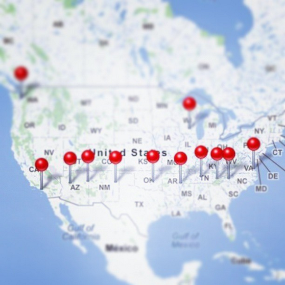

Other hobbies & interests

Food & Wine
Growing up, my family rarely went out to eat and when we did, it was usually fast food. The suburbs has vast amounts of franchise restaurants so it quickly become mundane. It wasn't until college where I got to experience and explore what city life had to offer. With a multitude of different types, textures, taste and smells of food. I was in gluttony. With that I also got experience different wines, whiskeys and beers.

Adventures
My first time traveling without my family was when I was 18. I ended up traveling all up and down the east coast. It was almost addicting to visit a new city
My best memory ever was when I went back to my home country of Seoul, South Korea. What was only suppose to be a 2 month stay ended up being around 10 months. There, I learned how to speak, read, and write Korean fluently (my Korean was gramatically horrible prior to going). With China and Japan being close I decided to make the most of my stay in Asia and visit those countries as well. It was my first time traveling alone. I learned a lot about myself during this time and cherish every moment of it.